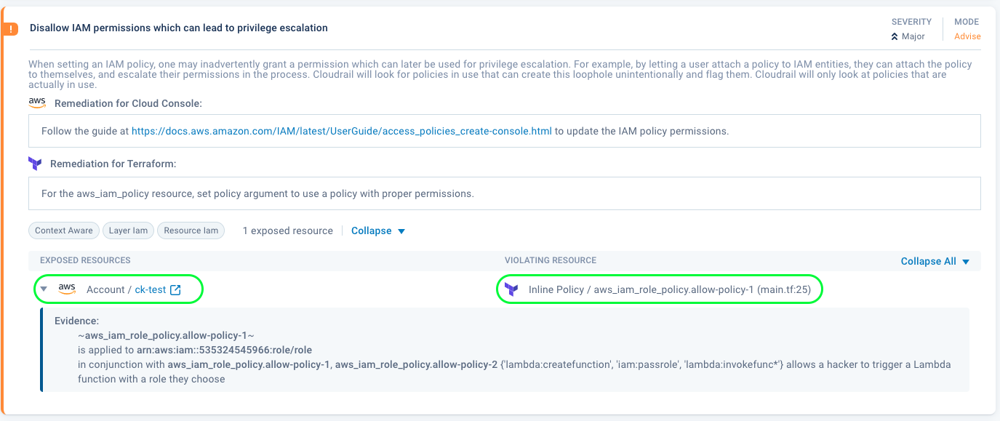

Overview
Cloudrail is a tool for automating security for your Infrastructure-as-Code. For an IaC like Terraform, Cloudrail inspects your Terraform plan and validates misconfigurations using policy-as-code. Cloudrail can be integrated into your CI pipeline to automate security analysis across your organization. Cloudrail's Policy-as-Code structure is unique as each rule will validate both your live infrastructure and IaC. Effectively, you can consolidate your cloud infrastructure analysis for live state and build state with Cloudrail's Policy-as-Code framework.

The rules use a context model that is included in this repository. This documentation section will cover the different aspects of the context model - how it's created, how it's used, and details of every class and attribute in the model.
The code for all rules and context is located in the cloudrail-knowledge repository.
Prerequisites
You are expected to be able to read and understand Python code. If you wish to submit contributions to this repository, you will also need to know how to write Python code. However the code used to write rules is fairly basic in structure, and so you don't need 10+ years of experience.
Why a context model with Python?
There are many ways to build rule engines. You could use simple query languages (like jq's language), invent your own
complicated ones (like SQL), or even go and invent your own language (like HashiCorp Sentinel or OPA). These languages can be executed on simple structured data (like JSON, YAML or XML), or more complicated data structures
(like a relational database or an object graph).
At the end of the day, it depends on what you're trying to achieve and what are your functional requirements.
For Cloudrail, this is what we wanted: 1. An imperative language, allowing for powerful logics that are easy to read (if, for, functions, etc.). 2. A language that people already knew and used and was quite common. 3. A data model that was easy to understand and reflected the terminology people were thinking in when imagining cloud environments. 4. An enriched model, that could carry a lot of context information and other imported data, and so powerful rules could be written on top of it.
How does Cloudrail's context model work?
For every cloud environment supported by Cloudrail, there's an environment context. For example, there's one for AWS and one for Azure. In it, you'll find objects representing various resources supported by the specific cloud environment.
Builders
Cloudrail has Builders. They're not included in this repository for simplicty, but they are simple to understand: a
builder parses some sort of input and generate objects in the environment context as a result. For example, there's a
Terraform builder which converts an aws_s3_bucket into a S3Bucket.
There's also an Azure builder which takes API outputs from Azure and converts them into objects, such as the
AzureSqlServer resource.
These builders allow Cloudrail to support various input sources and eventually cover all IaC languages (CloudFormation, ARM, Bicep, Pulumi, etc.) and allows the rules to "not care" about the source of the input. The rule is the same whether the input was from a live environment or a specific IaC language. Rules can, if they want, get more information about the source of the object if it helps in their logic, but it's not a must.
Merging/Stitching
For a given cloud environment, Cloudrail may receive several inputs. For examlpe, for an AWS account, Cloudrail may get input from both AWS API calls and a Terraform plan. Those are two builders, generating two separate context models. However, as we said, one of Cloudrail's biggest advantages is in its ability to execute rules on the model wherever the input came from, right?
And so, Cloudrail runs a merging operation that allows it to take several contexts and merge them into one. To do that,
it uses the "keys" concept. You might notice that every Mergeable has a
get_keys function. This is used to determine if two objects, in two separate environment contexts, are actually the
same one and should be merged.
The merging process also has an order of precedence. If the same object is seen twice from two sources, it knows how to decide which source is more recent or up to date, and use that one as the primary source of content.
Once merging is done, there's one, unified context model, representing the entire environment.
RelationsAssigner
After the context is merged, Cloudrail begins "connecting the dots". At this phase, the model becomes a "graph model" and so objects can begin pointing to one another. For example, an IAMIdentiy will point to its policies, or a Subnet will point to its VPC.
This makes it a lot easier to write rule code, as you don't need to do any lookups. Finding a subnet's VPC, is just a
matter of using its vpc attribute.
Enrichment
This is one of the coolest parts of Cloudrail and follows the relation assignment. This is where the object model becomes more valuable than just representing the input in a graph model. Cloudrail now uses various algorithms to import valuable information into the context model and make it accessible to the rule writer.
For example, want to know if a resource is publicly accessible, and how? Look at the attribute exposed by those classes that inherit from ConnectionInstance.
Want to know if a policy violates AWS's best practices? Look at
Policy's access_analyzer_findings attribute.
How do rules work?
A rule is a Python class inheriting from BaseRule. It has a simple
run function where all the logic is executed. A rule returns a response which includes a list of issues that it found.
Every issue, has a few attributes:
- Exposed resource - this is the resource who is exposed (from a security perspective) by the violation found. Note that often times the exposed resource is different from the violating resource.
- Violating resource - this is the resource which violated the rule's logic. Usually, this resource is the one that needs to be fixed.
- Evidence - this is a human-readable string that is used to help the user understand what the issue is and where to look when fixing it.
Rules are registered for execution via the metadata files (such as aws_rules_metadata.yaml and azure_rules_metadata.yaml). Cloudrail loads the metadata information and uses it to build a list of rules to run. It also uses this metadata to show the user information about each rule.
A rule only decides if a configuration is violating its logic or not. A rule does not decide what to do with that violation. It is up to a separate mechanism to decide if the violation is an error or a warning, or whether or not to return exit code 1 or 0 in the Cloudrail CLI.
If you're interested in seeing how to write your own custom rule, check out this video.
How do I add resource X or attribute Y?
If you're missing a specific object you care about, or you found the object but it's missing an attribute, you'll need our help in adding it. Since builders, relations assignment, enrichment, etc, are required for every object and many attributes, this work needs to be done by the Indeni team in the core engine. To request a specific object or attribute, simply open an issue in this repository and we'll get right to it.
Further Reading:
Some notes:
Cloudrail only highlights IaC-backed resources by default
Let's say a rule found a violation in a specific object in the context model and created an issue with an exposed resource and violating resource. The issue will only be presented to the user within the CI/CD process if either one of the resources (or both) comes from the Terraform plan (or IaC code) submitted for review by the user.
In other words, if both exposed and violating resources are not in the IaC code at all, they will be removed from the
rule output by default. A rule can override this behavior by returning True for filter_non_iac_managed_issues.
Cloudrail uses Checkov for some static analysis
In some cases, Cloudrail will leverage Checkov to do static analysis. This is mainly in cases where the context hasn't yet been fully built out. We generally strive to cover all the commonly used cloud resources quickly, but allow the use of Checkov rules where the context model doesn't exist yet.